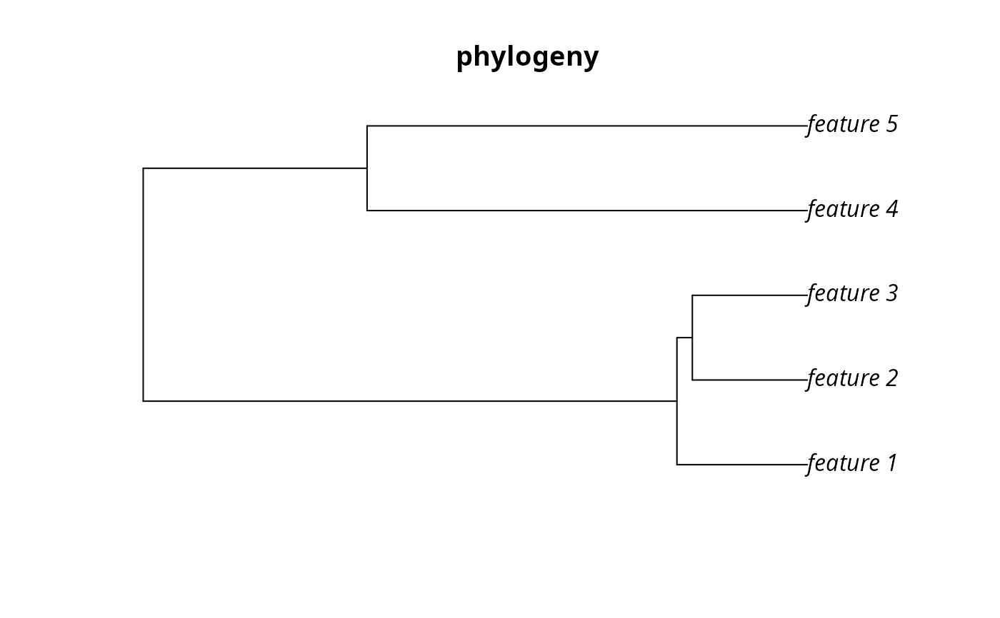

Add maximum phylogenetic endemism objective
Source:R/add_max_phylo_end_objective.R
add_max_phylo_end_objective.RdSet the objective of a conservation planning problem() to
maximize the phylogenetic endemism of the features represented in the
solution subject to a budget. This objective is similar to
add_max_phylo_end_objective() except
that emphasis is placed on representing species with geographically
restricted evolutionary histories, instead representing as much evolutionary
history as possible. This function was inspired by Faith (1992),
Rodrigues et al. (2002), and Rosauer et al. (2009).
add_max_phylo_end_objective(x, budget, tree)
Arguments
| x |
|
|---|---|
| budget |
|
| tree |
|
Value
Object (i.e. ConservationProblem) with the objective
added to it.
Details
A problem objective is used to specify the overall goal of the conservation planning problem. Please note that all conservation planning problems formulated in the prioritizr package require the addition of objectives---failing to do so will return an error message when attempting to solve problem.
The maximum phylogenetic endemism objective finds the set of
planning units that meets representation targets for a phylogenetic tree
while staying within a fixed budget. If multiple solutions can meet all
targets while staying within budget, the cheapest solution is chosen.
Note that this objective is similar to the maximum
features objective (add_max_features_objective()) in that it
allows for both a budget and targets to be set for each feature. However,
unlike the maximum feature objective, the aim of this objective is to
maximize the total phylogenetic endemism of the targets met in the
solution, so if multiple targets are provided for a single feature, the
problem will only need to meet a single target for that feature
for the phylogenetic benefit for that feature to be counted when
calculating the phylogenetic endemism of the solution. In other words,
for multi-zone problems, this objective does not aim to maximize the
phylogenetic endemism in each zone, but rather this objective
aims to maximize the phylogenetic endemism of targets that can be met
through allocating planning units to any of the different zones in a
problem. This can be useful for problems where targets pertain to the total
amount held for each feature across multiple zones. For example,
each feature might have a non-zero amount of suitable habitat in each
planning unit when the planning units are assigned to a (i) not restored,
(ii) partially restored, or (iii) completely restored management zone.
Here each target corresponds to a single feature and can be met through
the total amount of habitat in planning units present to the three
zones. In earlier versions of the prioritizr package, this
function was named add_max_phylo_end_objective.
The maximum phylogenetic endemism objective for the reserve design problem can be expressed mathematically for a set of planning units (\(I\) indexed by \(i\)) and a set of features (\(J\) indexed by \(j\)) as:
$$\mathit{Maximize} \space \sum_{i = 1}^{I} -s \space c_i \space x_i + \sum_{j = 1}^{J} m_b l_b \frac{1}{a_b} \\ \mathit{subject \space to} \\ \sum_{i = 1}^{I} x_i r_{ij} \geq y_j t_j \forall j \in J \\ m_b \leq y_j \forall j \in T(b) \\ \sum_{i = 1}^{I} x_i c_i \leq B$$
Here, \(x_i\) is the decisions variable (e.g. specifying whether planning unit \(i\) has been selected (1) or not (0)), \(r_{ij}\) is the amount of feature \(j\) in planning unit \(i\), \(t_j\) is the representation target for feature \(j\), \(y_j\) indicates if the solution has meet the target \(t_j\) for feature \(j\). Additionally, \(T\) represents a phylogenetic tree containing features \(j\) and has the branches \(b\) associated within lengths \(l_b\). Each branch \(b \in B\) is associated with a total amount \(a_b\) indicating the total geographic extent or amount of habitat. The \(a_b\) variable for a given branch is calculated by summing the \(r_{ij}\) data for all features \(j \in J\) that are associated with the branch. The binary variable \(m_b\) denotes if at least one feature associated with the branch \(b\) has met its representation as indicated by \(y_j\). For brevity, we denote the features \(j\) associated with branch \(b\) using \(T(b)\). Finally, \(B\) is the budget allocated for the solution, \(c_i\) is the cost of planning unit \(i\), and \(s\) is a scaling factor used to shrink the costs so that the problem will return a cheapest solution when there are multiple solutions that represent the same amount of all features within the budget.
References
Faith DP (1992) Conservation evaluation and phylogenetic diversity. Biological Conservation, 61: 1--10.
Rodrigues ASL and Gaston KJ (2002) Maximising phylogenetic diversity in the selection of networks of conservation areas. Biological Conservation, 105: 103--111.
Rosauer D, Laffan SW, Crisp, MD, Donnellan SC and Cook LG (2009) Phylogenetic endemism: a new approach for identifying geographical concentrations of evolutionary history. Molecular Ecology, 18: 4061--4072.
See also
Examples
# load ape package require(ape) # load data data(sim_pu_raster, sim_features, sim_phylogeny, sim_pu_zones_stack, sim_features_zones) # plot the simulated phylogeny # \donttest{ par(mfrow = c(1, 1)) plot(sim_phylogeny, main = "phylogeny")# } # create problem with a maximum phylogenetic endemism objective, # where each feature needs 10 % of its distribution to be secured for # it to be adequately conserved and a total budget of 1900 p1 <- problem(sim_pu_raster, sim_features) %>% add_max_phylo_end_objective(1900, sim_phylogeny) %>% add_relative_targets(0.1) %>% add_binary_decisions() # \donttest{ # solve problem s1 <- solve(p1)#> Gurobi Optimizer version 9.0.1 build v9.0.1rc0 (linux64) #> Optimize a model with 14 rows, 103 columns and 565 nonzeros #> Model fingerprint: 0x3612cd77 #> Variable types: 0 continuous, 103 integer (103 binary) #> Coefficient statistics: #> Matrix range [2e-01, 2e+02] #> Objective range [1e-04, 7e+01] #> Bounds range [1e+00, 1e+00] #> RHS range [2e+03, 2e+03] #> Found heuristic solution: objective -0.0000000 #> Presolve removed 5 rows and 5 columns #> Presolve time: 0.00s #> Presolved: 9 rows, 98 columns, 555 nonzeros #> Variable types: 0 continuous, 98 integer (98 binary) #> Presolved: 9 rows, 98 columns, 555 nonzeros #> #> #> Root relaxation: objective 2.016809e+02, 20 iterations, 0.00 seconds #> #> Nodes | Current Node | Objective Bounds | Work #> Expl Unexpl | Obj Depth IntInf | Incumbent BestBd Gap | It/Node Time #> #> 0 0 201.68085 0 5 -0.00000 201.68085 - - 0s #> H 0 0 136.2380565 201.68085 48.0% - 0s #> 0 0 197.58020 0 6 136.23806 197.58020 45.0% - 0s #> 0 0 197.51139 0 7 136.23806 197.51139 45.0% - 0s #> 0 0 197.48202 0 8 136.23806 197.48202 45.0% - 0s #> 0 0 197.47800 0 9 136.23806 197.47800 45.0% - 0s #> 0 0 197.47611 0 9 136.23806 197.47611 44.9% - 0s #> 0 0 197.45130 0 9 136.23806 197.45130 44.9% - 0s #> 0 0 197.44461 0 10 136.23806 197.44461 44.9% - 0s #> 0 0 197.43100 0 11 136.23806 197.43100 44.9% - 0s #> 0 0 197.42103 0 12 136.23806 197.42103 44.9% - 0s #> 0 0 197.42090 0 13 136.23806 197.42090 44.9% - 0s #> 0 0 197.41966 0 13 136.23806 197.41966 44.9% - 0s #> 0 0 187.93839 0 10 136.23806 187.93839 37.9% - 0s #> 0 2 187.59883 0 10 136.23806 187.59883 37.7% - 0s #> #> Cutting planes: #> Cover: 1 #> MIR: 3 #> StrongCG: 1 #> RLT: 1 #> #> Explored 6 nodes (115 simplex iterations) in 0.03 seconds #> Thread count was 1 (of 4 available processors) #> #> Solution count 2: 136.238 -0 #> #> Optimal solution found (tolerance 1.00e-01) #> Best objective 1.362380564988e+02, best bound 1.362383942298e+02, gap 0.0002%# find which features have their targets met r1 <- feature_representation(p1, s1) r1$target_met <- r1$relative_held > 0.1 print(r1)#> # A tibble: 5 x 4 #> feature absolute_held relative_held target_met #> <chr> <dbl> <dbl> <lgl> #> 1 layer.1 7.71 0.0926 FALSE #> 2 layer.2 2.35 0.0752 FALSE #> 3 layer.3 5.81 0.0808 FALSE #> 4 layer.4 4.28 0.100 TRUE #> 5 layer.5 5.77 0.102 TRUE# plot the phylogeny and color the adequately represented features in red plot(sim_phylogeny, main = "adequately represented features", tip.color = replace( rep("black", nlayers(sim_features)), sim_phylogeny$tip.label %in% r1$feature[r1$target_met], "red"))# } # rename the features in the example phylogeny for use with the # multi-zone data sim_phylogeny$tip.label <- feature_names(sim_features_zones) # create targets for a multi-zone problem. Here, each feature needs a total # of 10 units of habitat to be conserved among the three zones to be # considered adequately conserved targets <- tibble::tibble( feature = feature_names(sim_features_zones), zone = list(zone_names(sim_features_zones))[rep(1, number_of_features(sim_features_zones))], type = rep("absolute", number_of_features(sim_features_zones)), target = rep(10, number_of_features(sim_features_zones))) # create a multi-zone problem with a maximum phylogenetic endemism # objective, where the total expenditure in all zones is 5000. p2 <- problem(sim_pu_zones_stack, sim_features_zones) %>% add_max_phylo_end_objective(5000, sim_phylogeny) %>% add_manual_targets(targets) %>% add_binary_decisions() # \donttest{ # solve problem s2 <- solve(p2)#> Gurobi Optimizer version 9.0.1 build v9.0.1rc0 (linux64) #> Optimize a model with 104 rows, 283 columns and 1915 nonzeros #> Model fingerprint: 0xd2a9fafa #> Variable types: 0 continuous, 283 integer (283 binary) #> Coefficient statistics: #> Matrix range [2e-01, 2e+02] #> Objective range [3e-05, 7e+01] #> Bounds range [1e+00, 1e+00] #> RHS range [1e+00, 5e+03] #> Found heuristic solution: objective -0.0000000 #> Presolve removed 97 rows and 187 columns #> Presolve time: 0.00s #> Presolved: 7 rows, 96 columns, 460 nonzeros #> Variable types: 0 continuous, 96 integer (96 binary) #> Presolved: 7 rows, 96 columns, 460 nonzeros #> #> #> Root relaxation: objective 1.776060e+02, 8 iterations, 0.00 seconds #> #> Nodes | Current Node | Objective Bounds | Work #> Expl Unexpl | Obj Depth IntInf | Incumbent BestBd Gap | It/Node Time #> #> 0 0 177.60604 0 1 -0.00000 177.60604 - - 0s #> H 0 0 108.4704962 177.60604 63.7% - 0s #> H 0 0 177.6060344 177.60604 0.00% - 0s #> #> Explored 1 nodes (8 simplex iterations) in 0.00 seconds #> Thread count was 1 (of 4 available processors) #> #> Solution count 3: 177.606 108.47 -0 #> #> Optimal solution found (tolerance 1.00e-01) #> Best objective 1.776060343541e+02, best bound 1.776060411374e+02, gap 0.0000%# calculate total amount of habitat conserved for each feature among # all three management zones amount_held2 <- numeric(number_of_features(sim_features_zones)) for (z in seq_len(number_of_zones(sim_features_zones))) amount_held2 <- amount_held2 + cellStats(sim_features_zones[[z]] * s2[[z]], "sum") # find which features have their targets met targets_met2 <- amount_held2 >= targets$target print(targets_met2)#> layer.1 layer.2 layer.3 layer.4 layer.5 #> TRUE FALSE TRUE TRUE TRUE# plot the phylogeny and color the adequately represented features in red plot(sim_phylogeny, main = "adequately represented features", tip.color = replace(rep("black", nlayers(sim_features)), which(targets_met2), "red"))# } # create a multi-zone problem with a maximum phylogenetic endemism # objective, where each zone has a separate budget. p3 <- problem(sim_pu_zones_stack, sim_features_zones) %>% add_max_phylo_end_objective(c(2500, 500, 2000), sim_phylogeny) %>% add_manual_targets(targets) %>% add_binary_decisions() # \donttest{ # solve problem s3 <- solve(p3)#> Gurobi Optimizer version 9.0.1 build v9.0.1rc0 (linux64) #> Optimize a model with 106 rows, 283 columns and 1915 nonzeros #> Model fingerprint: 0xf8af6716 #> Variable types: 0 continuous, 283 integer (283 binary) #> Coefficient statistics: #> Matrix range [2e-01, 2e+02] #> Objective range [3e-05, 7e+01] #> Bounds range [1e+00, 1e+00] #> RHS range [1e+00, 2e+03] #> Found heuristic solution: objective -0.0000000 #> Presolve removed 5 rows and 5 columns #> Presolve time: 0.01s #> Presolved: 101 rows, 278 columns, 1905 nonzeros #> Variable types: 0 continuous, 278 integer (278 binary) #> Presolved: 101 rows, 278 columns, 1905 nonzeros #> #> #> Root relaxation: objective 1.988943e+02, 59 iterations, 0.00 seconds #> #> Nodes | Current Node | Objective Bounds | Work #> Expl Unexpl | Obj Depth IntInf | Incumbent BestBd Gap | It/Node Time #> #> 0 0 198.89426 0 6 -0.00000 198.89426 - - 0s #> H 0 0 177.6060852 198.89426 12.0% - 0s #> H 0 0 177.6061122 198.89426 12.0% - 0s #> 0 0 cutoff 0 177.60611 177.60611 0.00% - 0s #> #> Cutting planes: #> Gomory: 1 #> Cover: 2 #> StrongCG: 1 #> RLT: 3 #> #> Explored 1 nodes (113 simplex iterations) in 0.02 seconds #> Thread count was 1 (of 4 available processors) #> #> Solution count 3: 177.606 177.606 -0 #> #> Optimal solution found (tolerance 1.00e-01) #> Best objective 1.776061122406e+02, best bound 1.776061122406e+02, gap 0.0000%# calculate total amount of habitat conserved for each feature among # all three management zones amount_held3 <- numeric(number_of_features(sim_features_zones)) for (z in seq_len(number_of_zones(sim_features_zones))) amount_held3 <- amount_held3 + cellStats(sim_features_zones[[z]] * s3[[z]], "sum") # find which features have their targets met targets_met3 <- amount_held3 >= targets$target print(targets_met3)#> layer.1 layer.2 layer.3 layer.4 layer.5 #> TRUE FALSE TRUE TRUE TRUE# plot the phylogeny and color the adequately represented features in red plot(sim_phylogeny, main = "adequately represented features", tip.color = replace(rep("black", nlayers(sim_features)), which(targets_met3), "red"))# }